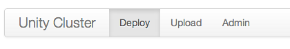
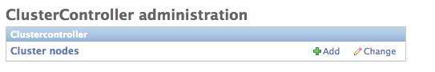
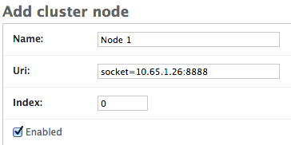
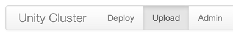
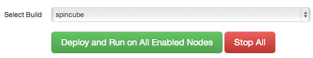

Skip to the “Start the Nodes Manually” section below if you have your own deployment system.
With the master node deployment tools running, browse to <ip>:<port>/cluster of the node.
Click on “Admin” tab and enter username password from Master Node: Step 5" 
Click “Add” on “Cluster Nodes” 
Fill up the form, the uri must be in this format: socket=<ip>:<port> 
Click “Save”
Repeat to add all the nodes
Click on the Upload tab 
Compress the build into a zip file. Ensure xxx.exe and xxx_data is at the root of the zip.
Click on the “Upload” button, select the zip file and click OK. The index value refers to which index this node assumes in the rig. It MUST be unique and should be used to determine the camera setup.
Note that a unique id is generated for your build. This id is generated based on the zip file’s name. To update your build simply upload a zip file with the same name.
Ensure all slave nodes are turned on. See Slave Node.
On the deploy page, select from the drop down the build you want to push out 
The selected build should be synced to all enabled slaves and will be executed together with the master node.
Click StopAll
Master Node - This has to be started first <exe> -server <num slaves> tcp://:<pubport> tcp://:<ackport>
Slave Node - These must come after Master Node and the order doesn’t matter <exe> -client <index> tcp://<masterip>:<pubport> tcp://<masterip>:<ackport>
For testing, all master and slave instances could be started on the same machine using the command line above.